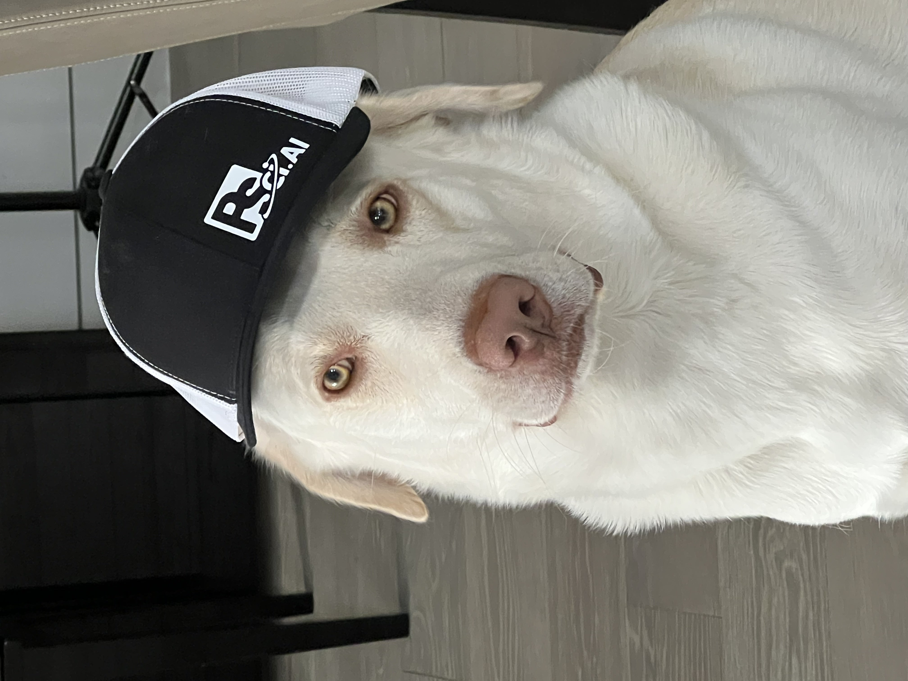
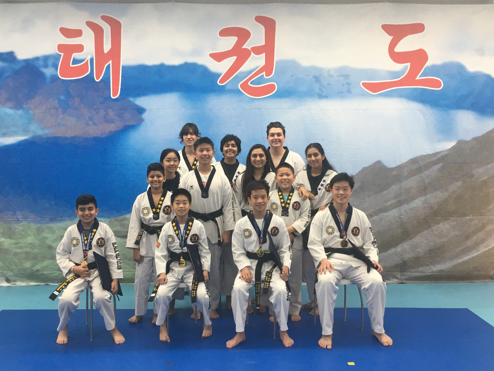
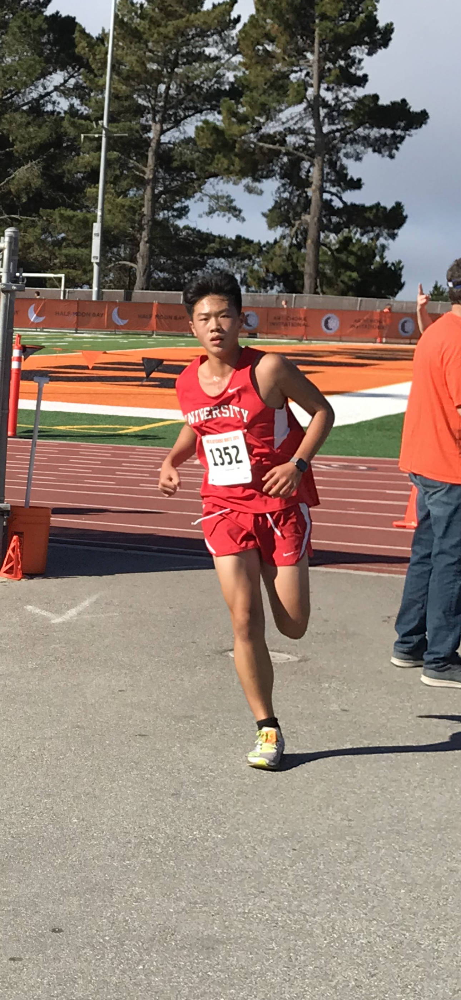

-
I have a labrador retriever named Momo. He has his own
website.

- I keep track of my climbing training plan in this document. I also upload climbing videos to my YouTube channel. Plus, I've found this article to be useful in determining the right shoe size for me.
-
Some desserts I've made:
- Japanese Cheesecake (my mom's favorite!)
- NY Cheesecake
- Baklava (my favorite!)
- Cookies
- Cinnamon Rolls
- Monkey Bread
- French Toast with a separate video for measurements
- Pancakes and a sheet-pan version
- Ube Roll
- Brownies
- Tiramisu (my brother's favorite!)
- The Evil Genius Cake
-
Some of the books I've read:
- Life 3.0 by Max Tegmark
- Living in Data by Jer Thorp
- Superintelligence: Paths, Strategies, Dangers by Nick Bostrom
- Lying by Sam Harris
- Taxi from Another Planet: Conversations with Drivers about Life in the Universe by Charles S. Cockell
- Enlightenment Now: The Case for Reason, Science, Humanism, and Progress by Steven Pinker
- Zero to One: Notes on Startups, or How to Build the Future by Blake Masters and Peter Thiel
- Business Adventures by John Brooks
- What If?: Serious Scientific Answers to Absurd Hypothetical Questions by Randall Munroe
- There Are Places in the World Where Rules Are Less Important Than Kindness by Carlo Rovelli
- The War of Art: Break Through the Blocks and Win Your Inner Creative Battles by Steven Pressfield
- Quantum Computing for Everyone by Chris Bernhardt
- Framers: Human Advantage in an Age of Technology and Turmoil by Kenneth Cukier, Viktor Mayer-Schönberger, and Francis de Véricourt
- What If? 2: Additional Serious Scientific Answers to Absurd Hypothetical Questions by Randall Munroe
- How To: Absurd Scientific Advice for Common Real-World Problems by Randall Munroe
- Animal Farm by George Orwell
- Love and Math: The Heart of Hidden Reality by Edward Frenkel
- White Holes: Inside the Horizon by Carlo Rovelli
- 1984 by George Orwell
- Hypermedia Systems by Carson Gross, Adam Stepinski, and Deniz Akşimşek
- Programming Massively Parallel Processors by Wen-mei W. Hwu, David B. Kirk, and Izzat El Hajj
- Four Thousand Weeks: Time Management for Mortals by Oliver Burkeman
- The Future of Nutrition by T. Colin Campbell
- Why Diets Make Us Fat by Sandra Aamodt
- Nutrition and Physical Degeneration by Weston Price
-
I'm a black belt in Taekwondo, certified by World Taekwondo.

-
I'm a Music Teachers National Association (MTNA) level 10 pianist.
Some songs I've played:
- Scherzo, Op. 31, No. 2 by Chopin
- Ballade pour Adeline by Clayderman
- Prelude No. 1 by Gershwin
- Nocturne, Op. 9, No. 2 by Chopin
- Piano Sonata, Op. 27, No.2 by Beethoven
- Piano Sonata, Op. 13, No.8 by Beethoven
- Gymnopedie, No. 1 by Satie
- Odeon by Nazareth
- Praeludium und Fuge B - Dur, BWV 866 by Bach
- Paganini Etude No. 5 by Liszt
- Tarantella by Pieczonka
- Prelude in E Minor, Op. 28, No. 4 by Chopin
- Prelude, BWV 935 by Bach
- In the Forest, Op. 51, No. 4 by Rebikov
- The Storm, Op. 109, No. 13 by Burgmuller
- Waltz, Op. Post. by Chopin
- Valse Dramatico by Bober
- Fur Elise by Beethoven
- Sleeting by Heller
-
I've run up to seven miles in one run, and (on a separate occasion)
I've run a six minute mile.
